Owase, Mie: things to do, food and stays
Owase · Mie
Owase
Highlighted on the Mie map.
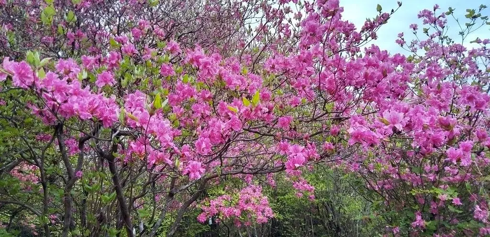
Stay
尾鷲シーサイドビュー
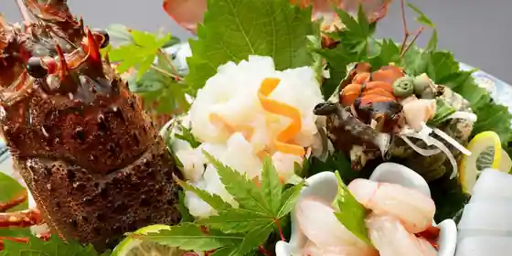
Owase Shisaidobyu
ビジネスホテルフェニックス
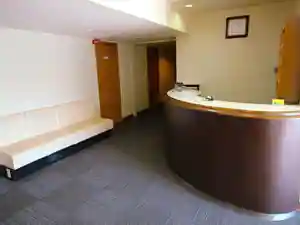
Business Hotel Fenikkusu
Hotel in Sakae, Owase with business travelers.
漁村暮らしの宿「わたまし」
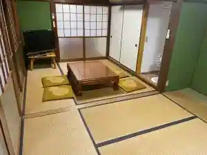
Gyoson Kurashi No Yado (Watamashi)
Inn in Nakai, Owase with a renovated traditional house.
一棟貸し Villa EDGE
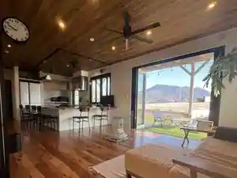
Hitomune Kashi Villa EDGE
ホテル ビオラ
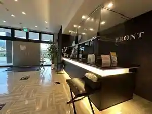
Hotel Biora
Hotel in Kitaura, Owase with business travelers.
港の魚宿 おおそね<totoyado>
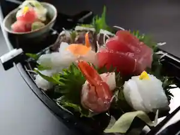
Minato No Sakana Yado Osone <totoyado>
古民家宿SENT
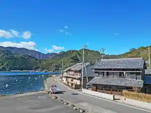
Ko Minka Yado SENT
Inn in Kuki, Owase with an irori hearth dining room and a renovated traditional house.
縁場 せいじら
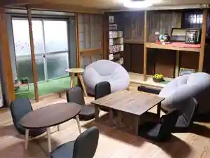
Heri Ba Seijira
民宿 旅館 磯渡し 勝三屋
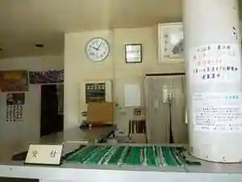
Minshuku Ryokan Iso Watashi Katsuzo Ya
Dining
風見鶏
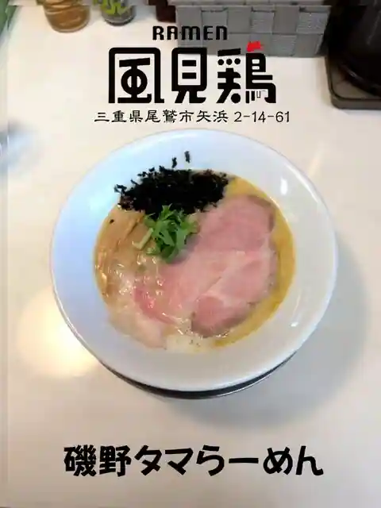
Kazamidori
おわせ魚食堂
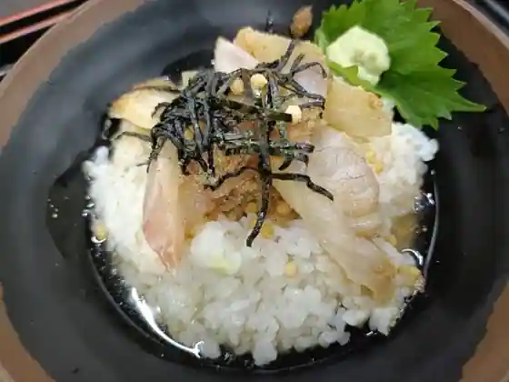
Owase Sakana Shokudo
鬼瓦
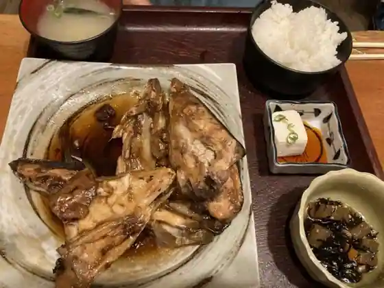
Onigawara
一重
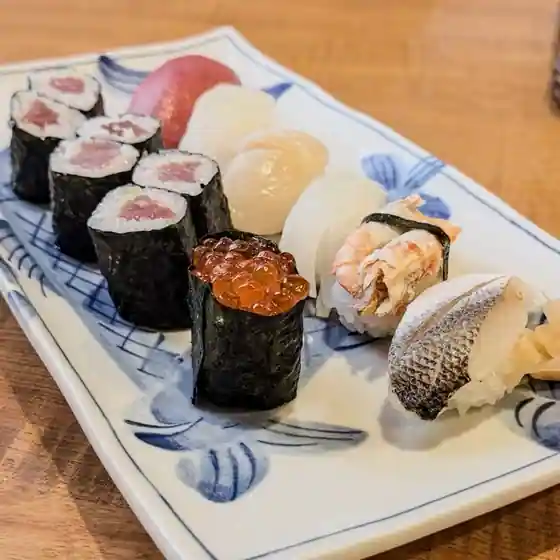
Hitoe
かっぽう田舎
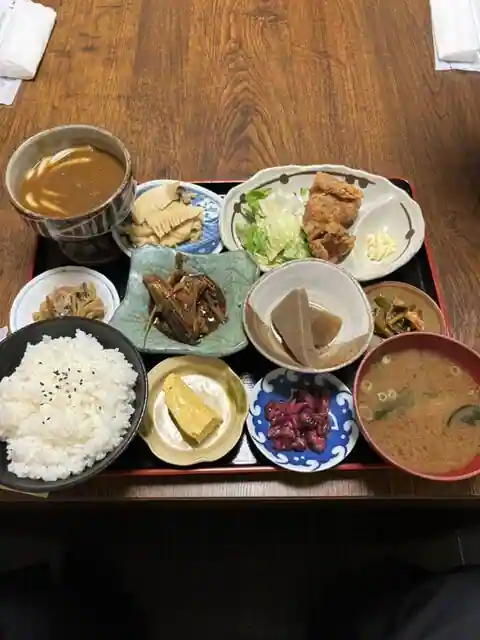
Kappo Inaka
食事処 おふくろ
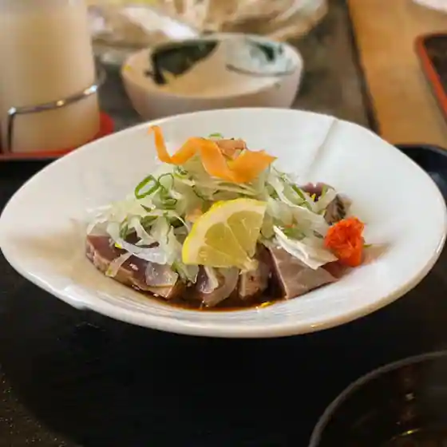
Shokuji Tokoro Ofukuro
魚処 豆狸
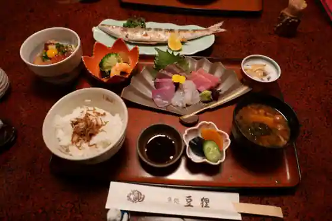
Sakana Tokoro Mamedanuki
もりば
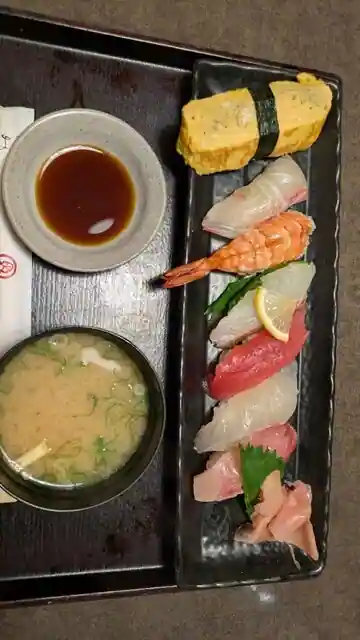
Moriba
食彩 南風
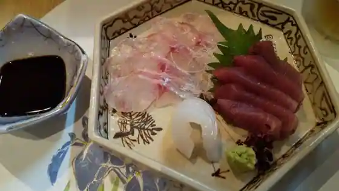
Shokusai Hae
魚鮨肉炭 いわき
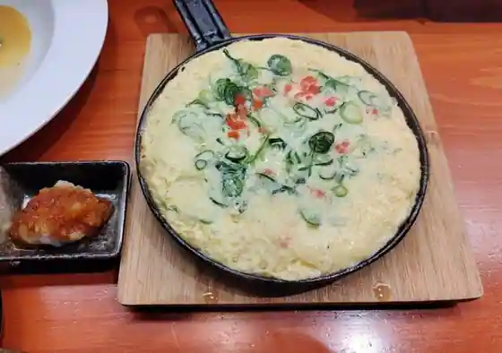
Sakana Sushi Niku Sumi Iwaki
amayl.
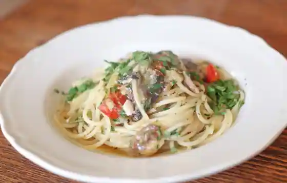
amayl.
レストラン 三紀
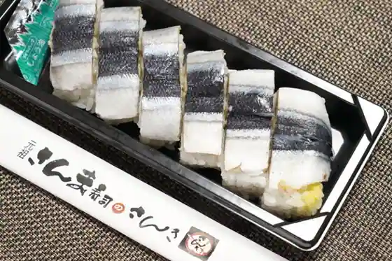
Restaurant Miki
Crepe Shop Maple
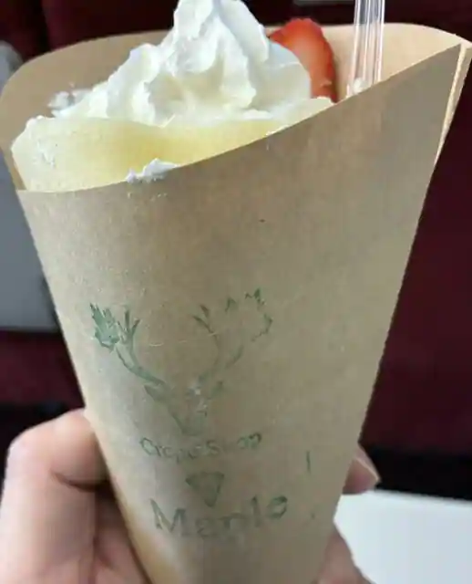
Crepe Shop Maple
福助堂
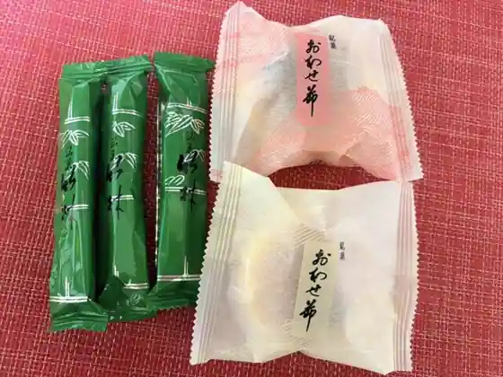
Fukusuke Do
たわらや
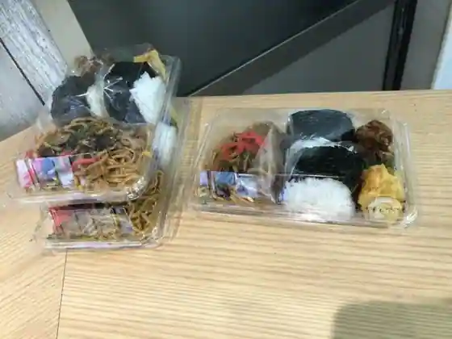
Tawaraya
芹の花
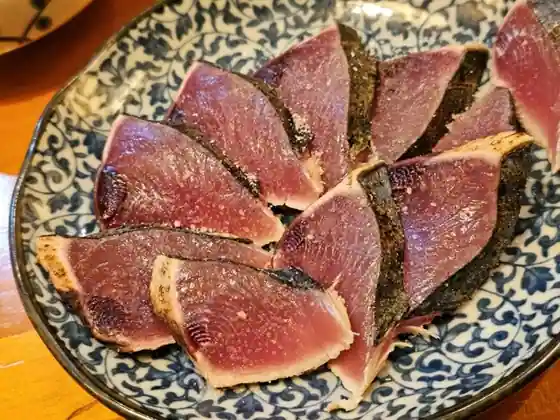
Seri No Hana
DINING Shogun
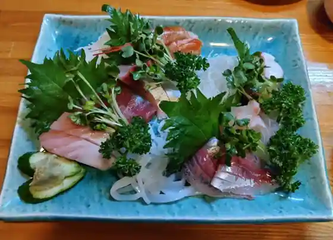
DINING Shogun
好好飯天
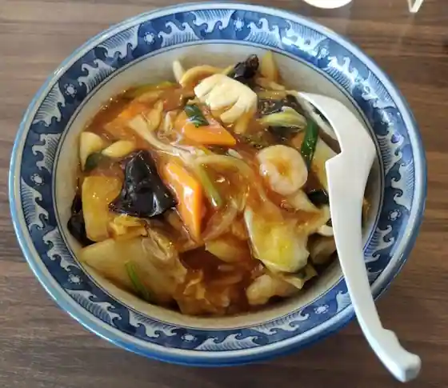
Koko Meshi
あけぼの鮨
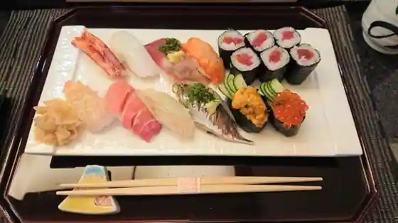
Akebono Sushi
ディッシュ ドリーム 天天
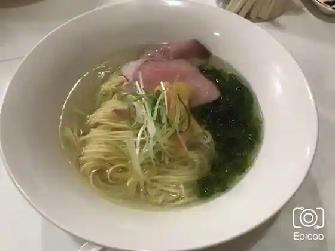
Disshu Dorimu Tenten
山口
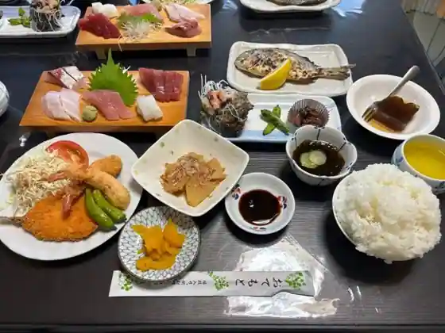
Yamaguchi
天翔
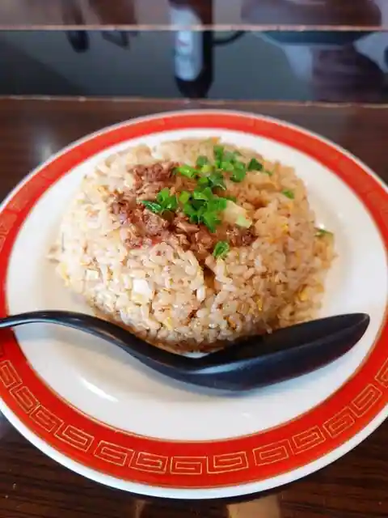
Tensho
Sights
Mie Prefectural Kumano Kodo Center
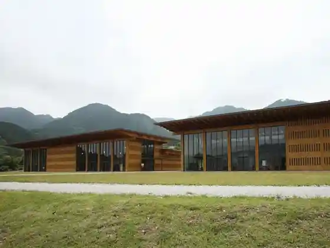
Yume Kodo Owase Yume Kodo Baths
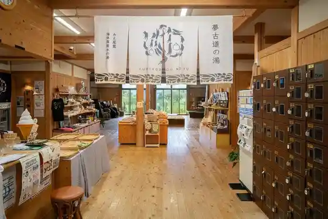
Miki Sato Beach
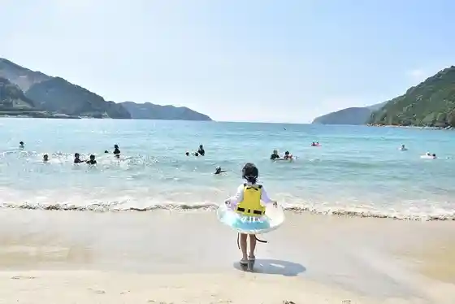
Ohai
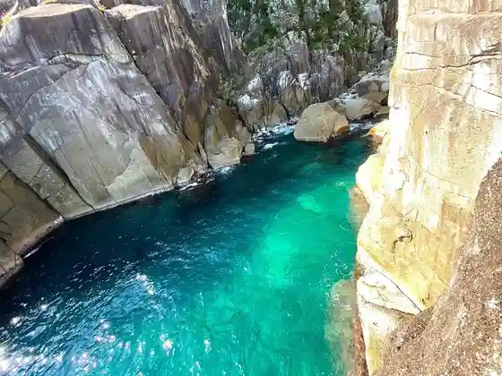
Owase Sone Town no Murasakiontsutsuji (Shiroyama Park Jo no Shiro (Sone Castle Ruins))
Owase Ritsu Tenmon Science Museum
Sone Castle Ruins (Shiroyama Park)
Kuki Jinja Juso
Owase Shrine
Kuki Saki Juso
Owase Kanko Bussan Kyokai
Tenma So
Kuchisubo Dam
Hachi Oniyama Koe (Kumano Kodo Ise Michi)
Kaisen Babekyu Hamayaki Ki Ya
Tsuchii Chikurin
Oku Kumano Taikan Gaido
GoldenEagle
Yugengaisha Domo
Kuma no Experience Kikaku
Misakitoiigumi
Kaji Ga Daibingusabisu
Naka Village Yama Park
Miki Toge Ugo Toge (Kumano Kodo Ise Michi)
Sone Jiro Saka Taro Saka (Kumano Kodo Ise Michi)
Umakoshi Fudo Taki Umakoshi Fudo Mikoto
Owase Shrine no Dai Kusu
Umakoshi Park
Owase Osone Ura Park (Sekai no Tsubaki Sono)
Akuasuteshon
Mie Prefectural Kumano Kodo Center Experience Kyoshitsu
Asuka Jinja Juso
Onaso Hana
Nirakura Saijo
Miki Sato Yacho no Komichi
Hachi Oniyama (Kenko Toyutori Forest)